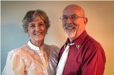

2017 Federation Officer Nominees
Here are the candidates running for office for the 2017-2018 year in the Oregon
Federation of Square and Round Dance Clubs. Your club secretary will receive
a ballot by early March, and the ballot is due back with the
Federation Secretary by May 1.
The current President (Marilyn Schmit) automatically becomes the Past President.
The current 1st Vice President (Kathy Roberts) automatically becomes the President.
The Treasurer is elected for a 2-year term, and his term is up this year.
First Vice President

|
1st VP -- Lorri McIntosh
Charlie Browns
Rogue-Sis-Q Council
Residence: Grants Pass, OR
Occupation: Registered nurse
Dance experience: 12 years
Club offices held: Secretary
Council offices held: President, State Delegate
Federation offices held: Secretary
Other leadership: Treasurer for Pear Blossom Festival
|
|
|
|
1st VP -- Dave Cooper
Mavericks
South Coast Council
Residence: Port Orford, OR
Occupation: Retired teacher
Dance experience: 24 years
Club offices held: President, Area Delegate
Council offices held: State Delegate
Federation offices held: 1st Vice President, President, Past President
Other leadership: Summer Festival Chairman
|
Second Vice President
|
|
2nd VP -- Ken Marifke
Eager Beavers, Hoedowners
Tualatin Valley Council
Residence: Portland, OR
Occupation: Retired
Dance experience: 4 years
Club offices held: Vice President
|
|

|
2nd VP -- Bob Houston
Saints N Aints
South Coast Council
Residence: Coos Bay, OR
Occupation: Log truck driver
Dance experience: 41 years
Club offices held: President, Vice President
Council offices held: President, Vice President
|
Secretary

|
Secretary -- Tim Hagey
Spin Cycle Squares, IWW
Emerald Empire Council
Residence: Albany, OR
Occupation: Homan Resources
Dance experience: 15 years
Other experience: Chairman Mid-Winter Festival
|
Treasurer
|

|
Treasurer -- Lane Clem
Eager Beavers
Tualatin Valley Council
Residence: Beaverton, OR
Occupation: Retired Banker
Dance experience: 6 years
Club offices held: Secretary, Treasurer
Council offices held: Treasurer
Federation offices held: Treasurer
|
Membership
|
|
Membership -- Patty Cooper
Mavericks
South Coast Council
Residence: Port Orford, OR
Dance experience: 22 years
Club offices held: President, Secretary, Treasurer, Membership
Council offices held: President, Vice President
Federation offices held: Historian
|
|
|
|
Membership -- Glory Guches
Charlie Browns
Rogue-Sis-Q Council
Residence: Eagle Point, OR
Occupation: Domestic Engineer
Dance experience: 17 years
Club offices held: Secretary
Council offices held: Vice President, Secretary, Treasurer
State offices held: Corresponding Secretary, State Delegate
|
|
|
|
Membership -- Lois Muck
Star Promenaders
Rogue-Sis-Q Council
Residence: Grants Pass, OR
Occupation: Domestic Engineer
Dance experience: 40 years
Club offices held: Secretary
Council offices held: Secretary, Treasurer
Other leadership: Chairman for Pear Blossom Festival
|